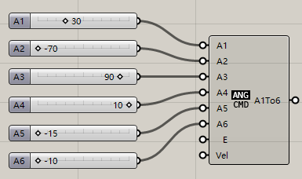

3. Add a start pose
If you want to change default start pose,you can do like this:
3.1. Create start pose
Create Anglecommand component and inputs
A1: 30
A2: -70
A3: 90
A4: 10
A5: -15
A6: -10
This is start pose.

3.2. Merge MoveCommands
Create Merge component and connect them: